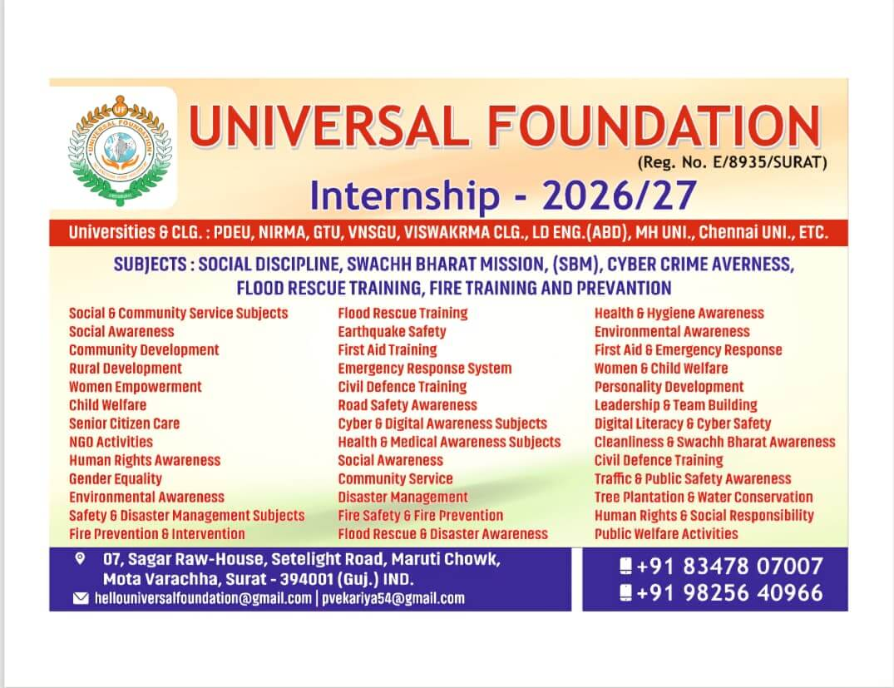
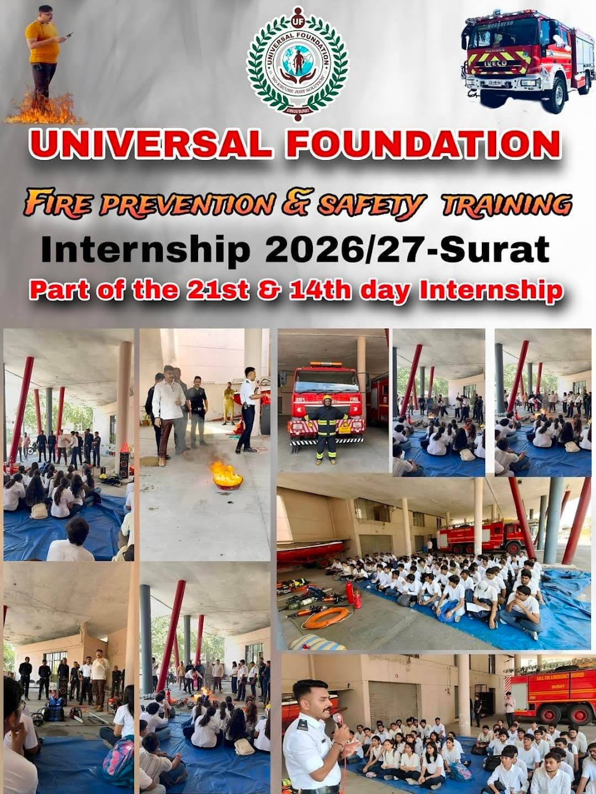
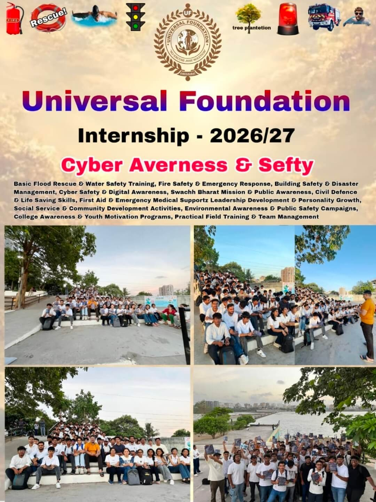
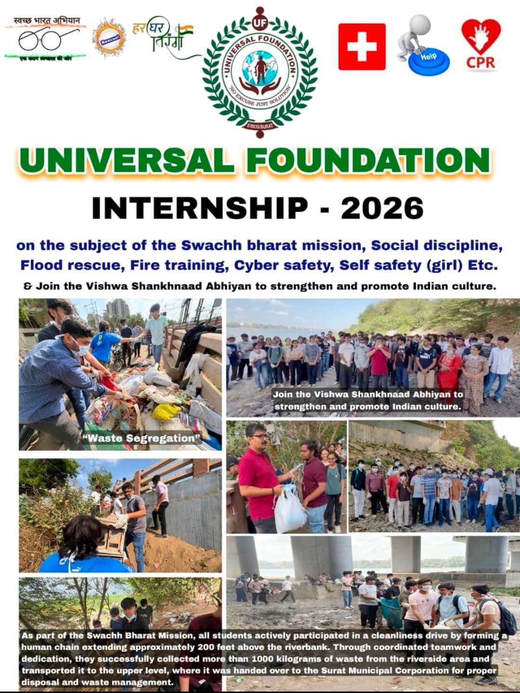

Empowering communities through disaster preparedness, environmental action, and life-saving education across India.
Established on 15th August 2000, Universal Foundation has worked for over two decades to equip individuals with essential life-saving skills and promote community awareness — from disaster preparedness to environmental sustainability.
Our Story
Training citizens to respond effectively to emergencies like floods, fires, and earthquakes through hands-on drills.
Conducting awareness programs and safety drills that protect and promote public well-being.
Tree plantation drives and active participation in cleanliness campaigns across Gujarat.
Raising awareness about digital threats and safe online practices for students and communities.
Programs focused on women's safety, skill development, and leadership in the community.
Bridging academic knowledge and real-world application through our CSSI internship program.



Our founder Prakashbhai Vekariya is a recipient of the President's Award(Jeevan Raksha) for his dedication to social service.
We ensure complete accountability in every initiative — our community always knows where impact is being made.
A strong team of passionate volunteers who show up consistently and make every program possible.
Join us as a volunteer, intern, or supporter. Every hand counts.
Get Involved Today